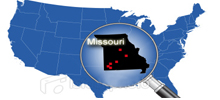

About MOCAP

With six partners located in Missouri's Tech-44 Corridor and one in central Missouri, MOCAP is devoted to research and development of new battery and advanced power technologies while educating a new high-tech workforce for the future.
Created with support from the Missouri Legislature, the Missouri Department of Economic Development, and a public-private partnership, MOCAP was designed to expand opportunities in battery and power storage devices across the state.
Missouri's research assets span advanced manufacturing, agriculture, life sciences, and engineering. MOCAP's role is to connect that statewide capacity to 21st century battery innovation through facility access, technical assistance, and university-led education.
Research and development
Battery chemistry, electrochemical devices, power storage, and product testing sit at the center of the MOCAP mission.
Workforce education
Students and working professionals can connect classroom instruction, distance learning, and applied facility experience.
Statewide collaboration
MOCAP connects local facility access in Joplin with faculty expertise and partner organizations across Missouri.
"The storage of energy is quickly becoming a major focal point around the world. MOCAP and our Missouri partners are positioned to address the need."
Former Missouri Governor Jay Nixon
Archived updates
- December 24, 2012: New Certification Available at Missouri State University for materials study and battery manufacturing-related training.
- December 22, 2012: Arbin Instruments multi-channel cell charge/discharge cycle tester placed into operation.
Research Facility

The MOCAP research facility is located on the campus of Missouri Southern State University in Joplin, Missouri. The 4,000 square foot facility provides researchers the tools and equipment needed to develop and test emerging battery chemistry.
Exclusive or shared leasing of the facility is available to researchers, corporations, government agencies, universities, and private individuals. The legacy site described lease options for weekly, monthly, or annual use.
Material handling
- 600 sq ft Munters dry room capable of 0.5% relative humidity
- VAC Omni-Lab glove box
- Battery pouch and bag lamination equipment
- Miniature welders for button and tab work
Testing and measurement
- Fluke 298 logging multimeters with TrendCapture
- Arbin Instruments multi-channel charge/discharge cycle tester
- Equipment for chemistry evaluation and targeted product testing
Facility support
- Video conferencing for distributed collaboration
- Private office space for team management and staff
- 24/7 campus access with security monitoring
Technical assistance and staffing
Technical assistance can be provided by leading experts in battery research and development and by a statewide network of university faculty with experience in electrochemistry and special materials.
Student assistants were also listed as available to help with data gathering and documentation requirements.
Legacy equipment document
The original site linked to a PDF with a fuller inventory of material handling and test equipment available at the facility.
Education

MOCAP provides an opportunity for students around the world who want to learn the chemistry and engineering behind emerging electrochemical storage devices, while also helping an existing workforce expand its knowledge of complex battery systems.
Using faculty from four Missouri university campuses, MOCAP offers both traditional classroom experiences and distance-learning options. The legacy site emphasized two-way and recorded training for students and workers in remote parts of the state and beyond.
Program model
- Traditional classroom instruction across partner campuses
- Distance learning and recorded course delivery
- Certificate or minor pathways in advanced power studies
- Coursework that blends theory, testing, safety, and modeling
Featured certificate
The archived site highlighted the University of Missouri's Energy Efficiency Engineering online graduate certificate as a 12-hour interdisciplinary program tied to energy systems and applied engineering practice.
Test and Evaluation of Electrochemical Devices
Coursework focused on testing and evaluation of electrochemical cells and batteries, with emphasis on safety, operational hazards, and responsible test practice.
Legacy topics included battery hazards, electrical testing, environmental testing, safety testing, and data analysis.
Design and Modeling of Electrochemical Devices
This archived course description focused on cell design, over-potentials, conductivity, diffusion behavior, and MATLAB-based modeling of battery performance.
Additional statewide offerings
The legacy site also referenced Missouri S&T, Missouri State, and Missouri Southern course placeholders and special topics offerings around electrochemical devices.
Partners

MOCAP operates as a network rather than a single institution. Industry partners, public universities, incubator resources, and regional organizations all contribute to the program's research and education mission.
University partners
University of Missouri - Columbia
Flagship research university contributing coursework, electrochemistry expertise, and interdisciplinary engineering support.
Visit missouri.edu
Missouri State University - Springfield
Public affairs-focused institution contributing education, collaboration, and distance learning support.
Visit missouristate.edu
Missouri S&T - Rolla
Technology-focused research university with engineering depth and a strong applied-science reputation.
Visit mst.edu
Missouri Southern State University - Joplin
Host campus for the MOCAP lab and an active partner in governance, student engagement, and facility operations.
Visit mssu.edu
Industry and regional organizations
EaglePicher Technologies
Battery and power systems manufacturer serving defense, space, aircraft, medical, and commercial markets.
Visit eaglepicher.com
EnerSys
Current public successor to the legacy NorthStar Batteries partner, serving stored energy markets across telecom, transportation, reserve power, and industrial systems.
Visit enersys.com
Aesir Technologies
Joplin-based battery technology company developing next-generation nickel-zinc systems for critical infrastructure, defense, and aerospace applications.
Visit aesirtec.com
Blue Origin
Aerospace company focused on reusable launch systems, in-space infrastructure, and building a road to space for the benefit of Earth.
Visit blueorigin.com
Joseph Newman Innovation Center
Certified business incubator supporting entrepreneurship and innovative technology development.
Visit the JNIC page
Joplin Area Chamber of Commerce
Regional business organization focused on economic prosperity and quality of life in the Joplin area.
Visit joplincc.com
Missouri Technology Corporation
Public-private partnership focused on entrepreneurship, innovation, and technology-based business growth.
Visit missouritechnology.com
Contact
The original contacts page directed inquiries about the research facility, technical assistance, and educational opportunities to MOCAP officers and directors. Those details are preserved below and should be confirmed before public relaunch.
Facility contact on the archived site
Dr. Tia Strait
MSSU Dean of Technology
417-555-1212
t-strait@mssu.edu
Legacy lab note
The archived site listed the lab as in use until February 15 and noted hotel discounts for researchers. Those details can be revised in the next content update.